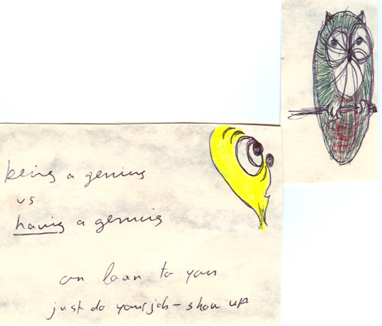

|
affirmations for MY JOURNEY (finding answers)
PURPOSE (finding purpose)
Purpose (towards highest good)
- Purpose
-
- Explore/experience Universe/myself.
- Self is new frontier:
- know “limited self”
- coming to know “unlimited self”
- My purpose is unfolding each moment,
- as calm down
- know that am far more than just my personality, problems, fears, dis-eases.
- My purpose overall:
- I am spirit, light, energy, love.
- I have power to live life with meaning & purpose.
- Constantly discovering ways to improve quality of my life.
- Am grateful to be here.
- Love unconditionally.
- Inner Wisdom
- Deep at the center of my being, there is inner wisdom. It is connected to vast wisdom of Universe, which I trust.
- Is always available to me. I ask & I receive.
- -> therefore each day is joyous, because choose to listen to my inner wisdom.
- Understanding:
- The more I understand about life, the more the world expands.
- Vision:
- With love I see clearly in every direction, by connecting with infinity of “Life” where all is perfect, for the highest good.
- Serendipity Enlightenment
- “I awaken to love each morning. I stretch my mind. I understand I am perfect, whole, complete, right now.”
- dn strive strain to what need.
- do receptive to all good. Know that everything desire comes in perfect time/space sequence.
- Universe on my side. As I align my consciousness with my Higher Self, I flow with an attitude of serendipity.
Improving Myself with Love
- Fixing It
- Do not be fix-it person: fix my relationship, bank account, boss, health, creativity
- -> Do love myself, every part -> incredible things occur in my life (problems seem to dissolve, nothing to fix)
therefore love self and trust Universe to bring me everything I need and desire
- Improvement
- I am a single human being with complex structure of beliefs.
- I search for love behind my personal issues. I do this with kindness & patience as grow and change.
- Life flows easier when at peace with my inner self.
- do not have to be wrong/bad in order to make change -> believing this makes things more difficult.
->do come from loving acceptance -> positive changes I desire come easier. Improvement is natural.
- Patience
- Patience is being at peace with the process of Life, knowing that everything happens in the perfect time/space sequence.
- IF not completion now THEN something more for me to know
- -> breathe deeply, ask “What do I need to know?”
- Then patiently wait and receive the help around me.
- “All is well. Everything I need comes to me at the perfect moment. I have plenty of time.”
- Highest Good
- The power that created me is the same Power I co-create with, and this power only wants me to express/experience my highest good. Therefore I make myself vitally important, and thereby truly loving myself. It opens me to greater possibilities, freedom, joy, unpredictable wonderful daily miracles. I reciprocate my highest good for others -> a truly loving act. Loving myself and others allows me to be all that I can be.
- Order
- Everything is Divine Right Order, from stars to my desk. I am a neat and orderly person, and find these routines flexible, fun and effective in helping do what I came here to do. I am part of the Divine plan. All is in perfect order in my world.
Success & Creativity
- Success
- Just like acorn has complete oak tree w/in its tiny form, so do I have success w/in me.
- how?: tiny steps, dream big, encourage and praise improvements, learn from experience, ok to make mistakes
- -> therefore move from success to success
- power: IF failure THEN is learning lesson. dn give it power.
- Power in Universe: 100% successful in everything it does. It created me
therefore already beautiful, successful person
- concl. To succeed, I must believe that I already a success (rather than thinking I am a failure)
- Creativity
- The creativity of the Universe flows through me all day long, and all I have to do to participate in it is know that I am part of it. One of my most powerful gifts is my imagination. I use it to see good things happen to me and everyone around me. I am peaceful as I co-create my life with the Higher Self.
- I am at peace when I draw. It put me in the loving blanket of the Universe. The Universe loves everything that I do, and wants to work with me in all my ongoing projects. My projects are always ongoing and changing, as they mirror the Universe that is ongoing and changing.
- Create protective psychological construct
- Safe distance
- me as writing
- & natural anxiety reaction to writing
- Ancient Greece and Rome:
-
- dn believe creativity from human beings
- did believe creativity came to human beings: was divine attendant spirit of creatives
- attendants as distant noble source for distant noble reasons
- Romans: daemons
- Socrates - believed had daemon form afar)
- Greece: geniuses
- dn think of “genius” as clever, but as magical divine embodiment
- like Dobi the house elf - magical divine entity lived in walls of study. Assist artist with work and shape outcome
- => tf distance - psychological construct - ancient artist protected -> tf productive
-
- Musician:
- Embodiment of tormented contemporary modern artist - trying to dominate/ control impulse creativity
- now older -> calmer
- Freeway driving -> hears little melody fragment - totally gorgeous - wants it -> dn have recorder, cn get it
-> anxiety response: will lose it. Horrified. Not good enough. Cannot do it. Panic.
=> stopped process => looked up in sky
- “Excuse me, can you not see I’m driving. Do I look like I can write something down? Not a good time. Come back at another time when I can take care of you. If I cannot accommodate, go bother someone else today”
- -> release “genius” (tf anxiety released)
- Peculiar bizarre conversation with musician & thing (genius)
- Writer:
- When in pits of despair
- >not coming
- thinking disaster, worst book ever, project dump
- -=> talk to open air,
- “Listen you thing. You and I both know that if this book is not brilliant it’s not entirely my fault. You can see I am putting everything into it. Do not have more. IF want better, you show up and do your part of the deal. IF you do not show up, I’m going to keep writing anyway, because that’s my job. I’d like the record to reflect today that I showed up for my part of the job.”
do not be afraid, daunted.
Just do your job
If the divine cockeyed genius shows up again - then ole
If not, then ole none-the-less for having human love & stubbornness to keep showing up non-the-less
- As a person, am still earthy sign, grounded, who loves luxury, and perfectionism. Now can tweak and tweak until all fits. Use that as motivation to keep polishing thing up
- “My home” is a definition of myself, whom I love, so it needs to be beautiful. It is Nature’s beauty and perfection I create with my art. I enjoy being alive, creating and living in world of colors.

DIVINE GUIDANCE
Divine Guidance
- Divine Guidance
- All is in Divine right order.
-
- IF things not going as expected THEN
- does not mean that am bad/wrong
- is signal that being redirected by Divine Guidance
- do
- Find quiet place to relax & connect with Intelligence within me.
- Supply of wisdom: inexhaustible, available to me -> revealed in perfect time/space sequence.
- Power flows through me all the time -> can open myself to this Power and receive what need, whenever I choose.
- Is safe
- to look within
- to enlarge viewpoint of life
- Spiritual Lessons/Growth
- Spirtual growth comes in strange ways
- exs. Urge to follow certain path. Forcefully prevented form living same old way.
- IF accept responsibility for my life THEN grow spiritually.
- is not about changing others
is when step out of victim role -> into forgiveness -> into new way of life
- dn happen overnight
is unfolding process
- concl. love myself to open door -> then be willing to change, grow.
- Dreams
- Ask dreams for guidance: clearing work done during dreams
- how? Think of problem before bed -> answer in morning
Recharging with Downtime
(atjaunosana. Going back to inner light, that connects to the One power)
“Rest is our biggest weapon.” Busher
- Meditation
- how?:
- Sit quietly, breath deeply -> connect with deep, inner, unchanged part of self.
- -> ask: “What is it that I need to know?” -> at some point during day will get answer.
- what is there?:
- wisdom and knowledge
- tranquility
- effect:
- Come back to present moment refreshed, renewed, & ready for rest of day.
- feel at peace. Know all is well. Serenity & safety I seek is always with me.
- Sleeping (preparing for sleep)
- dn listen to news/bad things before dreams
- do
- “Every corner of my world is a safe place. Even in the dark of the night when I sleep, I am safe. I know tomorrow will take care of itself. My dreams are of joy. I love waking up.”
- Silently, while still under covers, give thanks for cozy bed & all my blessings.
- Nu es gribu gulēt iet, Dievs slēdz man acis ciet.
Tava acs lai nomodā. Stāv par mani miedziņā.
- awaking:
- IF awake with dream THEN ask it to tell me about itself.
- Can begin mental skills before open eyes.
Power of Affirmations
- Affirmations
- def. Every single thought I have & every sentence I speak is an affirmation. It is either positive or negative. Positive affirmations create positive experiences, and negative affirmations create negative experiences.
- -> therefore I use my affirmations wisely.
- Subconscious mind <-> Conscious mind
- I constantly connect with subconscious mind -> & program it with loving messages.
i.e. positive, loving, uplifting messages that produce beneficial experiences for me.
- What I see in my world is mirror of what I have in my mind.
i.e. lack, limitation OR Infinite Oneness, Harmony, Wellness.
- “I am Conscious. I am energy. I am safe. I keep learning & growing & changing my consciousness & changing my experience. All is well (Vis labi).”
- Self Talk with Meditation
- Thoughts, words I speak - are powerful tools -> use them, enjoy what they produce for me.
- Meditation, prayer, affirmations: 10 mins morning -> better in use all day.
- Moment-too-moment thinking: shapes life. point of power. make changes now.
- therefore, catch thought that thinking right now -> “Do I want that thought to create my future?”
- -> can always choose more loving thought.
- IF negative thought pops up THEN let it pass like cloud on summers day.
- “I choose to release thoughts of resentment, shame, guilt.”
- “I choose to think thoughts - love, peace, joy.”
- “Love my thoughts because my inner dialogue is kind and loving.”
- “My thoughts are my friends, & I enjoy choosing fun ones to think.”
home
|